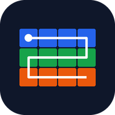

Экран
КОММУТАЦИЯ И ПИТАНИЕ LED-ЭКРАНОВ
Mac
macOS 10.14.6 Mojave и все новее. Для Mac с Intel — «Intel», для M1/M2/M3 — «Apple Silicon». Распакуйте zip и перетащите «Ekran» (в программе — «Экран») в «Программы». Первый запуск: правый клик по приложению → «Открыть» → «Открыть».
Windows
Windows 10/11, 64-bit. Ничего дополнительно ставить не нужно. Если появится синее окно SmartScreen: «Подробнее» → «Выполнить в любом случае» — только при первом запуске. Переносная версия работает без установки, например с флешки.
iPad и любой браузер
Без установки. В Safari: «Поделиться» → «На экран Домой» — появится иконка, как у приложения. В Chrome можно установить через значок в адресной строке.
Все версии и исходники одним архивом: Windows, Mac, веб-версия и исходники приложения.
Программы на Mac и Windows сами проверяют обновления: новая версия скачивается сама, программа предлагает перезапуститься. Проекты и свои кабинеты сохраняются. Проверить вручную: меню «Экран» (Mac) или «Справка» (Windows) → «Проверить обновления…».